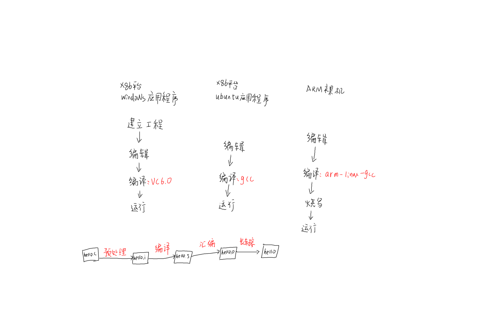

1.1 gcc和arm-linux-gcc的常用选项
各个平台编译过程

1.1.1 gcc的使用方法
gcc [选项] 文件名
1.1.2 gcc常用选项
| -v | 查看gcc编译器的版本，显示gcc执行时的详细过程 |
|---|---|
| -o |
Place the output into |
| -E | Preprocess only; do not compile, assemble or link. 只预处理，不会编译、汇编、链接 |
| -S | Compile only; do not assemble or link.只编译，不会汇编、链接 |
| -c | Compile and assemble, but do not link . 编译和汇编，不会链接 |
1.1.3 使用方式
方式一
gcc hello.c 输出一个a.out，然后./a.out来执行该应用程序。
gcc -o hello hello.c 输出hello，然后./hello来执行该应用程序。
方式二：
gcc -E -o hello.i hello.c
gcc -S -o hello.s hello.i
gcc -c -o hello.o hello.s
gcc -o hello hello.o
.o:object file(OBJ文件)
小结：
1）输入文件的后缀名和选项共同决定gcc到底执行那些操作。 2）在编译过程中，除非使用了-E、-S、-c选项(或者编译出错阻止了完整的编译过程) 否则最后的步骤都是链接。
方式三：
gcc -c -o hello.o hello.c
gcc -o hello hello.o
gcc会对.c文件默认进行预处理操作，-c再来指明了编译、汇编，从而得到.o文件 再通过gcc -o hello hello.o将.o文件进行链接，得到可执行应用程序。
1.1.4 链接
链接：就是将汇编生成的OBJ文件、系统库的OBJ文件、库文件链接起来， 最终生成可以在特定平台运行的可执行程序。
1）标准文件
crt1.o、crti.o、crtbegin.o、crtend.o、crtn.o是gcc加入的系统标准启动文件，
对于一般应用程序，这些启动是必需的。
-lc：链接libc库文件，其中libc库文件中就实现了printf等函数。
gcc -v -nostdlib -o hello hello.o会提示因为没有链接系统标准启动文件和标准库文件，而链接失败。 这个-nostdlib选项常用于裸机/bootloader、linux内核等程序，因为它们不需要启动文件、标准库文件。
一般应用程序才需要系统标准启动文件和标准库文件。 裸机/bootloader、linux内核等程序不需要启动文件、标准库文件。
2） 链接的方式
- 动态链接使用动态链接库进行链接，生成的程序在执行的时候需要加载所需的动态库才能运行。动态链接生成的程序体积较小，但是必须依赖所需的动态库，否则无法执行。
- 静态链接使用静态库进行链接，生成的程序包含程序运行所需要的全部库，可以直接运行，不过静态链接生成的程序体积较大。
gcc -c -o hello.o hello.c
gcc -o hello_shared hello.o
gcc -static -o hello_static hello.o